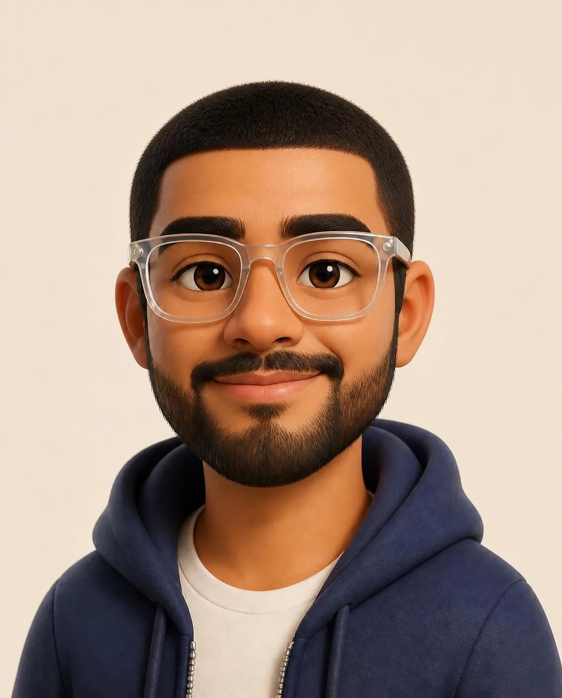
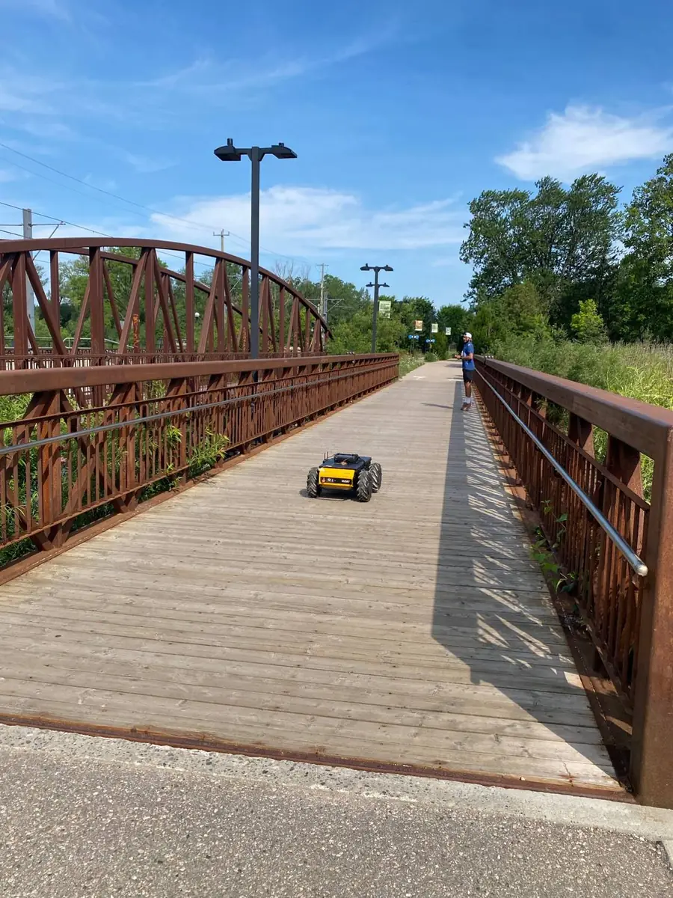
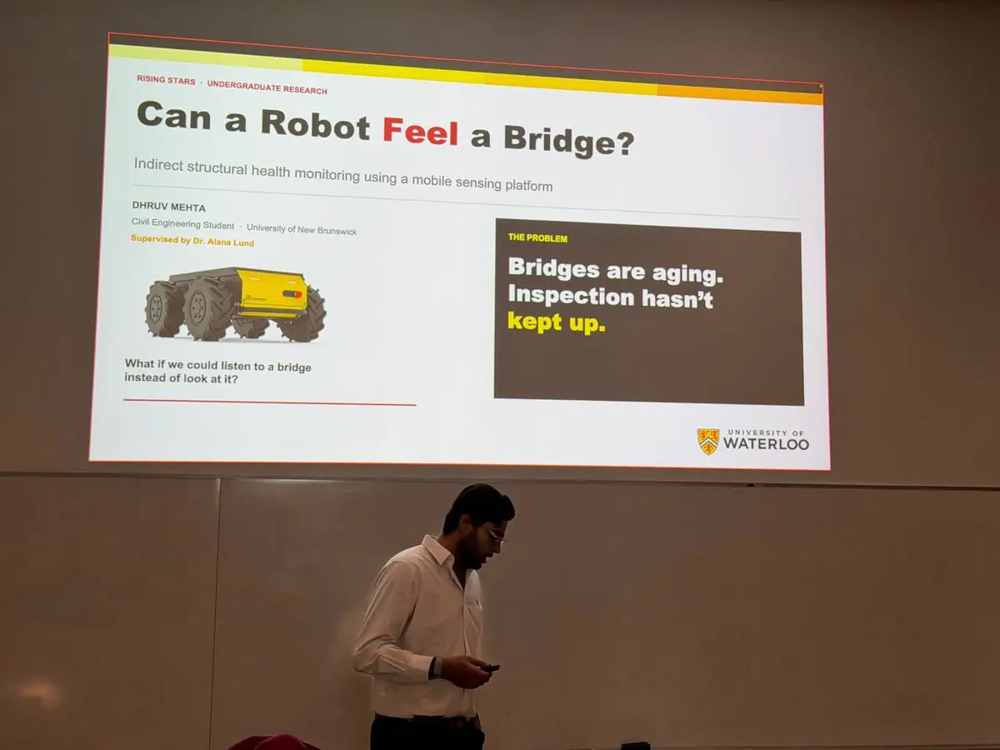
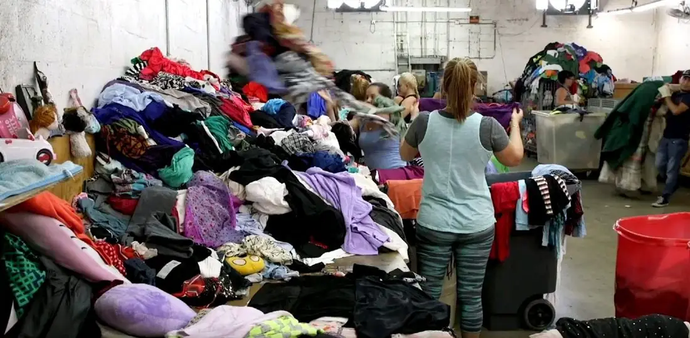
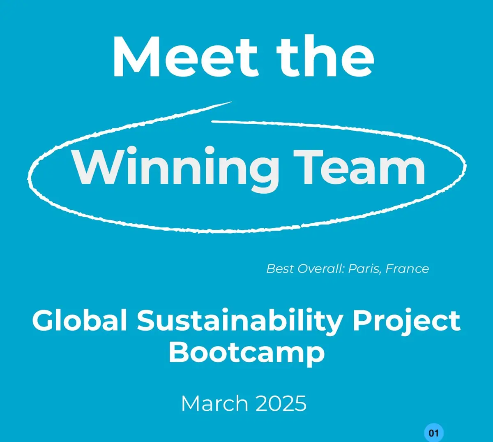
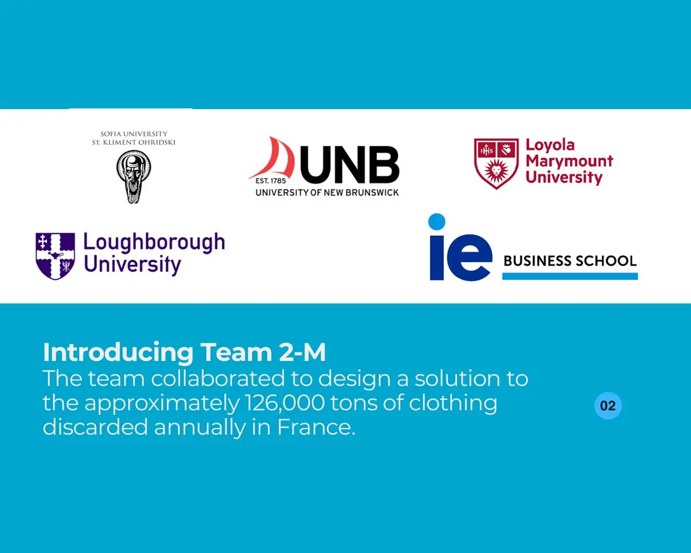
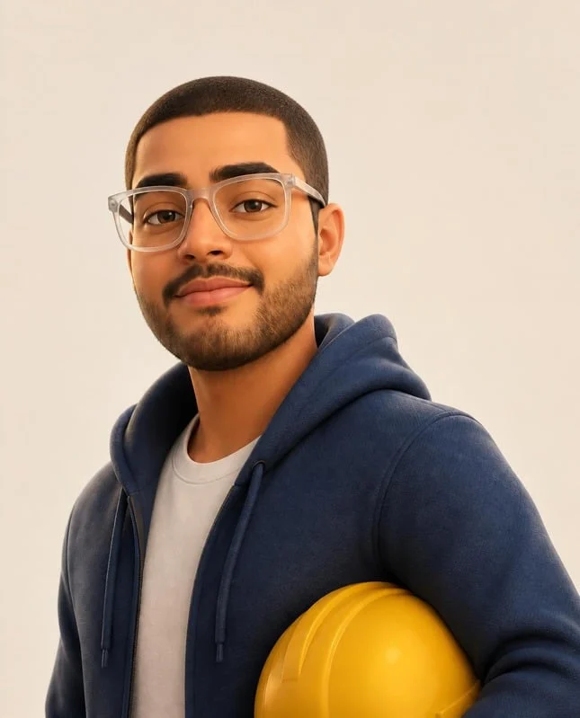

Hi, I'm Dhruv. I'm in my fourth year of civil engineering at UNB, and structures are the part I enjoy most. So far I've inspected bridges for the province, managed structural steel jobs, worked in a design office and spent a summer doing research at Waterloo.
Right now
Fourth year at UNB, graduating in 2027
VP Competitions for our CSCE student chapter
Putting together UNB's 2027 Troitsky team
Looking for a full-time role where I can do my best work

Where I'm from
Ahmedabad to New Brunswick
I grew up in Ahmedabad, India, and came to Canada in 2019 after finishing high school. I've lived in New Brunswick ever since.
Languages I speak
What I study
Civil engineering, mostly structures
BSc at UNB, graduating in 2027. Before that I did a two-year diploma in Building Engineering Technology (structural) at NBCC and finished with honours.
Work so far
Inspection, steel and design
Bridge inspector for the Province of New Brunswick, project manager at Ocean Steel, and structural associate at Varcon.
Research
Checking bridges with a robot
This summer I worked in a lab at the University of Waterloo, testing a small robot that drives over a bridge and records how it vibrates.
Outside class
Competitions and our student chapter
Captain of UNB's Troitsky bridge team in 2025 and 2026, TimberFever this year, Best Overall at a sustainability bootcamp in Paris, and VP Competitions for our CSCE student chapter (VP External before that).
Research · Summer 2026 · University of WaterlooSHM Lab
Checking bridges with a robot
Most bridges get checked by someone walking them every year or two. The idea here is to drive a small robot across instead, record how the deck vibrates, and watch for changes that could mean damage.
I was accepted into the Rising Stars Program at the University of Waterloo's Faculty of Engineering and spent the summer as an undergraduate research assistant in Dr. Alana Lund's Structural Health Monitoring Lab. It's called indirect monitoring because the sensors ride on the robot, so nothing has to be installed on the bridge.
Problem
Lots of old bridges
Visual inspections only happen every so often, and putting sensors on every bridge costs too much.
Method
Measure while driving
A Husky robot records data as it crosses the deck, and gives us the bridge's .
Field
Real bridges
Lots of repeat runs on pedestrian bridges that are in use, compared against the bridge's own measured response.
My part
Designed the robot characterization protocol
Led field data collection on two bridges
Modal analysis and model updating
ROS 2 control code, Python analysis, SOPs and test procedures
I'll share the results once the paper is out · Presented at Waterloo's Rising Stars session

Field test · pedestrian truss bridge

Rising Stars talk · Waterloo
How it workssimplified
1The robot drives across the bridge
2Its sensors pick up the deck shaking
3Peaks in that signal are the bridge's natural frequencies
Things I've built
Competitions, class projects, a field school and a sustainability challenge.
Teams build a bridge out of popsicle sticks and glue, and then it gets loaded until it breaks. I was UNB's captain in 2025 and 2026, both years as Team UNBreakable. I planned the design schedule, split up the build and kept everyone going on competition day at Concordia. Right now I'm putting together the team for the 43rd competition in February 2027.
Teams design a timber structure, then frame it full size on site out of lumber and plywood.
We built a slatted pavilion with a stepped, cantilevered roof and seating built in. Building with real 2×4s at full scale is very different from doing the analysis. Small errors add up fast, and the order you put things together matters.
We looked at Warren, Parker and Howe trusses and went with the Howe for its load path and simple geometry. We designed the members to , worked out the member forces, then built it and loaded it to failure in a hydraulic press.
What failed: the deck fasteners went first, and once the load moved to the top chord the bridge swayed sideways at 5.22 kN. Next time I'd add cross bracing on the deck and double up the diagonals.
We spent time inside the new Stuttgart 21 underground station (the one with the chalice-shaped columns), with stops in Munich and around Lake Constance. My report asked whether the way Stuttgart pays for it, through , could work in a city Moncton's size.
I think it can, on a smaller scale. I proposed a lane on Vaughan Harvey Boulevard connecting downtown parking lots to the 1,400-acre Vision Lands, paid for by the city selling land, since New Brunswick doesn't have legislation.
A Global Sustainability Project Bootcamp run by How to Change the World, built around the UN . Our team was five students from five universities in five countries, and I was the only engineer. Everyone else came from business, finance or economics.
The challenge was textile waste in Paris. France throws out roughly 126,000 tons of clothing a year. Our answer was an intermediary hub in Sentier, Paris's historic textile district, connecting small and mid-sized factories with local creative studios and workshops so reuse happens locally and can actually be measured.
BestOverall · Paris challenge
5Universities on the team
126k tClothing France discards a year



Try my bridge
My team designed and built this timber truss in Civil Design II, and in testing it failed at 5.22 kN. Here it is again, with traffic on it.
On span3.00 kNCentre1500 mmRA1.50 kNRB1.50 kNMmax2.25 kN·m
Blue members are being pulled, yellow ones pushed. In testing it failed at 5.22 kN.Past about 5 kN of trucks, it doesn't last long.
KRRRACK!
Welp. That's exactly what I try not to achieve.
Too much load, then a hit right at its natural frequency.Way too much truck. On a real job, this is the phone call nobody wants.
Crew's on the way
Deck response · velocity at strike pointDeck response · live, at midspanWaiting for a strike
The graph shows how far the middle of the deck moves as traffic goes over, including the small wobble when wheels hit the joints. Hitting it right in the middle can't set off modes 2 and 4, because those shapes don't move at midspan. It's a simple beam model (fn = n²·f1) with the motion slowed down and exaggerated, not real test data.

Where I've worked
A design office, a steel fabricator, provincial bridge crews and a research lab.
2024 – now
VP Competitions
CSCE Student Chapter · University of New Brunswick
I've been on our civil engineering student chapter's executive since 2024.
VP Competitions in 2025 and 2026
VP External in 2024
With our CSCE student chapter
Summer 2026
Undergraduate Research Assistant
Structural Health Monitoring Lab · University of Waterloo
Testing a robot that checks a bridge's health from how it vibrates.
Indirect of bridges using a mobile robotic sensing platform
Designed the robot characterization protocol and led field data collection on two bridges
Wrote SOPs and test procedures; maintained ROS 2 control code
Summer at Waterloo
2024 – 2025
Engineering Student / Bridge Inspector
Government of New Brunswick · DTI/MTI · Fredericton
Checking the province's bridges and writing up what needed repair.
Inspected bridges and related structures for condition and safety, -certified
Tested structural components including
Wrote inspection reports with recommended maintenance, repairs and budget allowances
On inspection days
2022 – 2023
Project Manager
Ocean Steel & Construction Ltd. · Saint John
Keeping structural steel jobs on schedule and everyone talking to each other.
Scoped structural steel projects from contract drawings and requirements
Scheduled fabrication and coordinated foremen, crews, trades and general contractors
Tracked , change orders and POs; reported project performance to senior management
Site photos · structural steel projects
2021 – 2022
Structural Associate
Varcon Inc. · Fredericton
Checking calculations and drawings for building designs.
Ran engineering calculations for weights and loads, by hand and in software
Reviewed technical drawings from CAD technicians and verified construction documents
What I can do
Sorted by the type of work, with the software and certifications that go with each.
Inspect
Walk a bridge, find cracks, rust and wear, and rate the condition of each part.
OSIM certifiedFall arrest & rescueWHMIS 2015OH&S due diligence
Design
Work out the forces in a structure and size its beams, columns and connections.
STAAD.Pro 2025S-FrameAutoCAD 2D/3DRevitCSA O86
Build
Build things with a team, then figure out why they broke.
Troitsky captain ×2TimberFever 2026Howe truss bridgeBest Overall · Paris 2025
Manage
Schedules, crews, budgets and paperwork on live construction projects.
Use robots, sensors and data to see how real structures behave.
ROS 2PythonModal analysisField testing
Degree · 2023 – 2027
University of New Brunswick
Bachelor of Science in Civil Engineering
Certificate of Academic Excellence, highest cumulative GPA 2025–26
Nels Anderson II Scholarship 2025–26
Edwin Jacob Special University Scholarship 2024–25
Allan K. Grimmer Prize 2024–25
Dean's List 23–24 · 24–25
Diploma · 2019 – 2021
New Brunswick Community College
Building Engineering Technology: Structural
Graduated with Honours 2021
Leadership
Student teams and the CSCE chapter
CSCE UNB, VP Competitions 2025 · 2026
CSCE UNB, VP External 2024
Troitsky team captain 2025 · 2026
Building the 2027 Troitsky team Feb 2027
A bit more about me
I grew up in Ahmedabad, India, and New Brunswick has been home since 2019. Outside school I'm a big Formula 1 fan. I watch every race weekend I can, as much for the engineering and the strategy calls as for the speed, and seeing a race in person at Spa-Francorchamps was unreal. I try to go somewhere new whenever I get the chance, and wherever I end up I catch myself looking at how the buildings and bridges were put together, so most of my photos are of bridges. I go hiking whenever I can, and I'll try most adventure sports at least once. So far that's been paragliding, off-roading in a dune buggy, sailing and a jet boat ride. And if I can find a court and someone to play with, I'm always up for a game.
LAP0:00.0BEST–0KM/H0/10
↑←↓→
ContactFredericton, NB
Let's talk
I'm looking for a full-time role where I can do my best work, ideally in structural or bridge engineering, inspection, or structural health monitoring. Happy to send references.